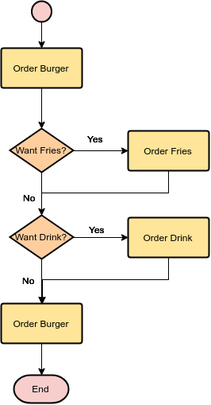
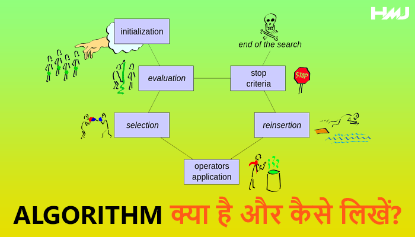
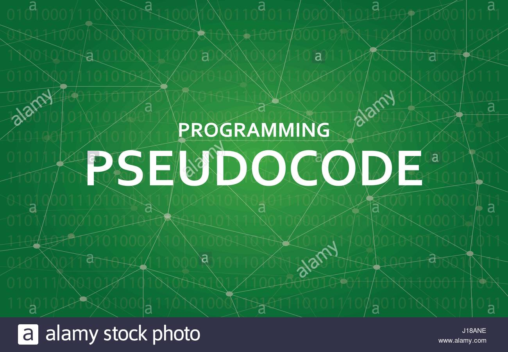
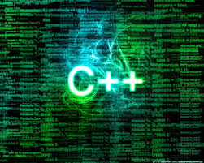
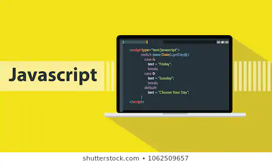
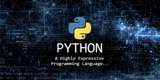
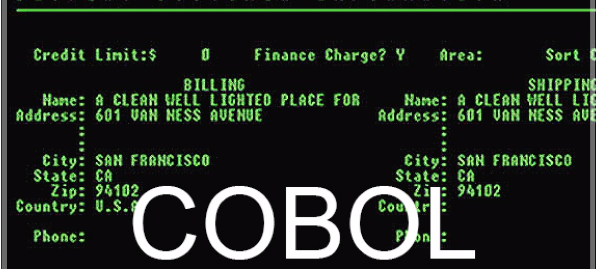
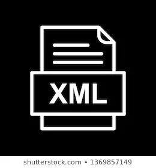
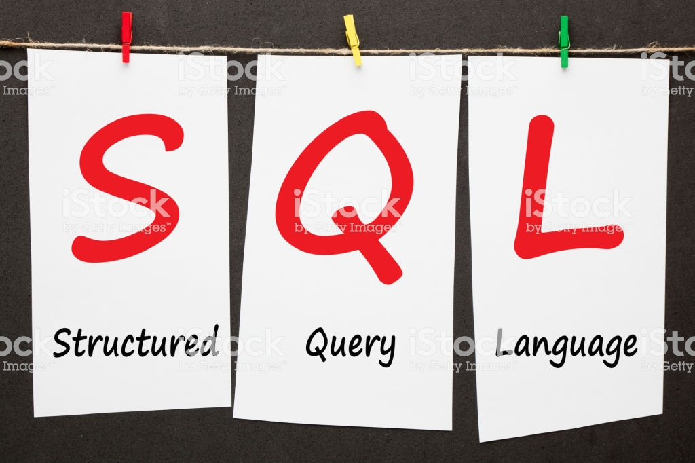
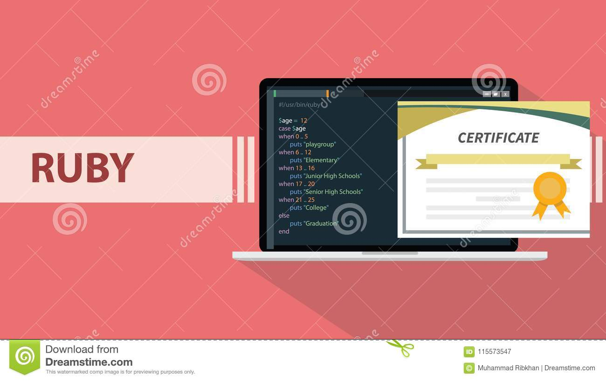

What Is Programing languages
आपको एक बात कहना चाहता हूँ. मैं पूरी कोशिश करूंगा की आपको Programming Language से सम्बंधित पूरी जानकरी या Computer भाषा की जानकारी इस एक लेख में ही मिल जाएँ. तो चलिए शुरु करते हैं, शायद आप के मन एक सवाल आया होगा की ये Computer Programming Language क्या है-(What is Programming Language ) और शायद आप ये भी जानना चाहते हैं की Programming Language क्या है
यह एक तरह की computer की भाषा है. इस language का इस्तेमाल Software और program लिखने के लिए किया जाता है . computer के अंदर आप जितने Software और Mobile में जितने भी application देख रहे हैं वो सारे programming language के जरिये बनाए जाते है.
जैसे की आपको पता होगा एक program लिखने के लिए programming language का इस्तेमाल किय जाता है. अब आपके मन में एक सवाल आया होगा की ये program क्या होता है. एक program में बहुत सारे instructions होते हैं और ये instruction ही computers को बताते हैं की उन्हें क्या करना है. और एक सवाल अब ये instruction क्या होते हैं. instruction में बहुत सारे commands होते हैं. एक बात और programming statements को command कहते हैं.
जो Program लिखे जाते हैं उन्हें और आसानी से लिखने के लिए Programmer कुछ tools या methods का इस्तेमाल करता है.
जैसे
1.
Flowchart
2.
Algorithm
3.
Pseudo Code.
1... Flowchart
अगर हम एक problem के Solution को Diagram और Symbol के जरिए बनाते हैं तो उसे Flowchart कहते हैं.

और जाने
2... ALGORITHM
यह एक तरीका है, जिसमे हम किसी भी प्रश्न या problem के solution को step by step तरीके से लिखते हैं.

click
3..PSEUDO CODE
pseudo code यह भी एक Problem Solving Technique है. यह दिखने में तो एक program जैसी होती है. लेकिन pseudo code लिखने के बाद एक program को लिखने में बड़ी आसानी होती है. जिसमे हम Program के जैसे ही if, else, print, Input, Output जैसे शब्दों का इस्तेमाल करते है. यह तीनो method ALGORITHM, FLOWCHART और PSEDUCODE एक PROGRAMMER के द्वारा इस्तेमाल किये जाते हैं जिससे Programming Language में program लिखते वक्त कोई error नहीं हो.

click
Computer और इंसानों के समझने के मुताबिक programming languages को मुख्य रूप से 2 भागो में बिभाजित किया गया है
1. Low level Programming Language/ इसे Machine Level Programming Language/ Binary Language भी कहते हैं
2. High Level Programming Language
चलिए अब विस्तार से इनके बारे में जानते हैं.
click
Programing languages






